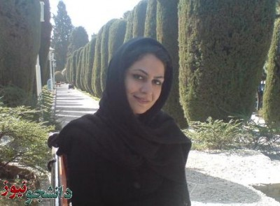

پذيرش > تریبون > مقالات > بهاره هدایت به روایت دوستانش در کمیسیون زنان تحکیم


 بهاره هدایت به روایت دوستانش در کمیسیون زنان تحکیم بهاره هدایت به روایت دوستانش در کمیسیون زنان تحکیم
25 شهریور 1389 - - نسخه قابل چاپ
دانشجو نیوز: بهاره هدایت اولین دبیر کمیسیون زنان تحکیم بود. او از سال ٨٤ تا ٨٦ این مسئولیت را به عهده داشت و پس از آن نیز به عنوان تنها زن عضو شورای مرکزی تحکیم حامی این کمیسیون بود. آنچه در پی می آید روایت دلتنگی های دوستان و همکارانش در این کمیسیون است:
حکم های یک سال گذشته را زیرو رو می کنم. حکم فعالین دانشجویی، زنان، اصلاح طلب و سیاسی، شاید حکم کمتر کسی نه سال ونیم باشد و این دلیلی است جدای عصبانیت، برای تفکر، که چرا به بهاره این حکم را داده اند. خاطراتم را مرور می کنم، دانشگاه تهران سال٨۵ بود یا ٨٦، تاریخ ها هیچ گاه دقیق یادم نمیماند ولی وقایع و صورت تک تک دوستانم به وضوح جلو چشمم حرکت می کنند. یادم میاد که بچه ها جمع شدند برای فعال کردن کمیسیون زنان دفتر تحکیم وحدت که سال ٨٤ ایجاد شده بود و یکی از دوستان گفته بود که تو هم برو کمک. من که نه انجمنی بودم نه تحکیمی فکر کردم، قدم مثبتی میتونه باشه برای بیشتر مطرح شدن مسائل زنان در جنبش دانشجویی که اغلب ساختار مردسالار بیرون رو در خودش بازتولید می کرد، با گه گاه تلاشی برای شکستن این نا به هنجار. اولین بار بهاره را آنجا دیدم و به همراه تعدادی دیگر از دختران دانشجو، کمیسیون زنان را راه انداختیم و چه سریع پیش رفت. پا به پای فعالیت های صنفی-سیاسی دانشجویی داخل دانشگاه و فعالیت کمپینی زنان خارج از دانشگاه، مسائل زنان پررنگ تر از قدیم لابه لای مسائل دانشجویی نیز مطرح شد. دیگر نشریه ای یا تجمعی یا گفتگویی داخل دانشگاه نمانده بود که بخشی از خودش را به مسائل زنان اختصاص نداده باشد.
هر چه بیشتر فکر میکنم، بیشتر مطمئن میشوم که حاکمیتی که در سال های اخیر بیشترین دشمنی را با زنان کرده، از طرح اولیه کاهش ساعات کاری زنان بگیر و سهمیه بندی جنسیتی دانشگاه تا طرح گشت ارشاد که به بازداشت شدن هزاران زن در کشور انجامید تا لایحه ضد زن حمایت از خانواده و ده ها طرح دیگر که با لعاب ورود زنان به دولت و مجلس پوشانده شد، که بسیاری از این زنان سیاسی در مجلس علیه زنان حرف زدند، با دلیلی بسیار ساده و روشن بهاره را به حبس کشیدند. بیشتر مطمئن میشوم که دلیل این حکم، ترس شدید حاکمیت مردسالار گرفتار در ساختار پوسیده اش، از زن سیاسی مدافع زنان است که این حکم ناعادلانه و بیشرمانه را به بهاره داده است. و ما معترضیم و دست از اعتراض برنخواهیم داشت تا آزادی بهاره از زندان.
به امید آزادی بهاره هدایت- نیلوفر گلکار
همیشه بود، همیشه همه جا بود، انگار محکوم بود به جنگیدن برای آزادی. انگار محکوم بودیم برای آزادی جان دادن. باید همه احساسش را در پس نقابی می گذاشت و می جنگید ولی زن بود، یک زن با همه زنانگی هایش، با همه لطافتش، با همه حسش. بهار بود. بهاره هدایت. مشت های گره کرده اش، گام استوارش و ایمانش همه و همه نوید یک روییدن تازه می داد در زمستان سرد و سخت روزهایمان، آخر بهار بود، بهاره هدایت. بی ادعا می جنگید، یادم به نگاه خشمگینش، به صلابت کلامش، یادم به بودنش در همه جا، در هر لحظه، در هر ثانیه ... می گفت بنویس، قلم داری پس بنویس از هتک حرمت دختر دانشجوی زنجانی. بنویس از لایحه ضد خانواده و ضد زن. بنویس از روزهای سرد و سخت سرزمنینمان. دلش بهار می خواست، آخر بهار بود، بهاره هدایت.حالا نمی دانم چقدر دیگر میشود یکسال که نیست.نمیخواهم بدانم که چند وقت است که خانه امین، بهار ندارد. محکوم است به نه سال نبودن و ماندن در پس میله های زندان سرد و سخت...می دانم هرجا که باشد، بهار هم همان جاست که بهار خودش منشاء رویش بود و بهار ، چه در پس میله ها و چه در پس میله ها . بهار بود و هست، بهاره هدایت ...
ریحانه حقیقی
اتفاق است که اینجا نشسته ام، در پارک دانشجو و به آن روبرو،به آن طرف حوض خیره مانده ام؟ درست وقتی که می خواهم برایت بنویسم، تو آنجا ایستاده ای با آن متانت همیشگی ات، میلاد هم هست زمستان بود یا پاییز؟؟ یادم نیست، یادم هست که نسیم از سرما می لرزید رویاهایم پرواز می کنند و اشک در چشمانم حلقه می زند برای تو برای همه که دربند مانده اند بهار جان می خواهم تمام احساسم را یکجا جمع کنم و در چند جمله و نمی شود کاش هیچ چیز اینطور نبود کاش همه چیز تغییر می کرد و تو آنجا نبودی.
روزی نیست که خیالت از خاطرم نگذرد و انتظار نکشم آزادیت را و باز خودت به دادمان می رسی با روحیه دادن به این و آن، ایمان دارم به تو اینجا کلمات هم به دادم نمی رسند که بگویم چقدر دلتنگم، چقدر غمگینم و چقدر شرمنده تو، اینجا که نمی شود حتی تنهاییت را فریاد بکشیم. بهار جانم کاش بازمی گشتیم به دو سال پیش، اینبار قول می دهم که به حرفت گوش کنم. شاید. . . . . .
سحر رضا زاده
۲۵ نوامبر ۸۴ بیانیه آغاز به کار کمیسیون زنان تحکیم خبر از تغییری می داد که به سرعت دانشگاه های سراسر ایران را فراگرفت. کمتر از یکسال بعد با این تغییر همراه شدم. سراغ بهاره رفته بودم که انتقاد کنم چرا کمیسیون زنان تحکیم به موج تعلیق دختران دانشجو اعتراض نمی کند؟ بهاره اما از من و دوستانم خواست که در راهی که آغاز کرده بود همراهی اش کنیم و این درسی بود که دختران جوان زیادی در شهرهای دور و نزدیک از او آموختند: اینکه برای حقوق شان بجنگند و پای هزینه هایش بایستند.
در این سال ها روزهای تلخ و شیرین زیادی را با هم تجربه کردیم. با گروه های مختلف فعالین زن از دغدغه هایمان گفتیم و کوشیدیم دانشجویان را نسبت به مسائل زنان حساس کنیم. نتیجه دلگرم کننده بود:کانون های زنان در انجمن دانشگاه های مختلف تشکیل شد، برنامه های زیادی در اعتراض به نقض حقوق زنان برگزار شد، نشریات و سایت های دانشجویی رنگ و بوی زنانه تری گرفت و حضور دختران در ساختارهای رسمی انجمن ها و تحکیم پررنگ تر شد. اما برای تجربه این شادی ها بهای سنگینی پرداختیم و سنگینی این بار را نیز مثل بقیه بارها، بهاره بیش از دیگران به دوش کشید. در طول این سال ها در رفت و آمدی دائمی بین زندان و دادگاه بود. اما استوارتر از آن بود که زیر این بارها کمر خم کند. مثل بهاری که از پس هر زمستان سردی، پرطراوت از راه می رسد، هر بار سرشار از شور و امید از زندان برمی گشت و ما را به پیمودن راه دلگرم می کرد. این بار اما این زمستان لعنتی عجیب طولانی شده. بهار برگرد تا باز هم شکوفه های امید در قلب های فسرده مان جوانه زند.
زینب پیغمبرزاده
گذشته را که ورق بزنم خاطره های فراوان از بودن هایت، با هم بودن هایمان، از آن خانه کوچک و آرامت در انتهایی ترین نقطه تهرانپارس که برای رسیدن از کرج گاه ساعت ها در راه بودم، تداعی می شود. حالا دیگر آن خانه از حضورت خالی است بهاره. ده ماه است که پس از سیل بلا کاشانه را به اجبار ترک گفتی و خانه ات تغییر یافته به زندان. زندانی که با گوشه های آن سخت، آشنایی.
هر گاه به نقطه ای فکر می کنم که جای ما دو نفر می توانست عوض شود، ۵ شهریور ۸۷ است که قدم زنان در ذهنم می آید؛ نشسته ای در ایستگاه مترویی شلوغ که شتاب زندگی و عمر رفته را هر آن به یادت می آورد. پیاده که شدم، دست که می دادم نگاهم به حلقه به تازگی جا خوش کرده در انگشتانت افتاد. ذهنم متنفر شد از آنکه بگویم بهاره انتخابات بعدی تحکیم باید باشی. تازه پس از سال های متلاطم می گفتی به دنبال عافیت جانی و در پی کشف زندگی ای همچون زنان دیگر.
نشستیم بر آن نیمکت های آبی ایستگاه حسن آباد. در گوشم می خواندی تحکیم نیاز به نیروی جدید دارد و باید باشی و من گله می کردم از سنگ هایی که گاه دوستان می اندازند و تمامی ندارد. گفتم تو برای بودن در روزهای سختی که حس فرا رسیدنش بود، بهترین و شایسته ترینی. مردم می دویدند بر سکوهای مترو و تنه همدیگر را نشانه می رفتند تا سریعتر به چیزی که نیست برسند. با آرامش نشسته و به حرکت شتابان واگن ها چشم دوخته بودی. جدا که می شدیم هر دو برای هم آرزوی رأی آوردن در انتخابات بعدی تحکیم که دو روز دیگر بود کردیم. دو سال گذشته از آن روز. شاید روزی هزار بار به آن لحظات سرنوشت ساز برگشته ام و گفتم کاش آن همه اصرار نمی کردم. ای کاش .... اما لختی از پشیمانی نگذشته می اندیشم چه اهمیت دارد که روز ها و شب هایت چون زنان دیگر در خانه سپری نشده یا روزمرگی روحت را تباه نکرده. حاصل ما در این عمری که شتابان می رود و ثانیه ای نمی ایستد هیچ است، ولی تو انسان وار تر زیسته ای بهاره. انسان وار تر زیسته ای ...
نسیم سرابندی
ارسال به
بالاترین
،
توییتر
،
فریندفید
،
فیسبوک
در همين بخش :
 دهمین دورۀ مراسم تندیس صدیقه دولت آبادی ۱۳۹۲ دهمین دورۀ مراسم تندیس صدیقه دولت آبادی ۱۳۹۲
کارت پستالهایی به بهانهی هشت مارس و به یاد همهی مبارزین راه برابری
بیانیه بیش از 350 تن از مدافعان حقوق زنان به مناسبت روز جهانی زن؛ زنان هر روز فرودستتر میشوند
لباسی که برای تن ما دوخته اند! /اعظم بهرامی
چالشها و چشمانداز فعالیت مدنی زنان
ديگر بخش ها :
طرح یک میلیون امضا
|
مقالات
|
سایت نوشته ها
|
اخبار
|
گزارش كمپين
|
گفت و گو
|
علیه سکوت
|
كوچه به كوچه
|
نامه های شما
|
گزارش ویژه
|
گفتگو با اعضا
|
ویژه سالگرد کمپین
|
تصویر برابری
|
دل آرام علی
|
تریبون
|
مقالات
|
تاریخ شفاهی
|
خارج از چارچوب
|
کتابخانه
|
درباره کمپین
|
کمپین در شهرها
|
کمپین در بند
|
صدای تغییر
|
ویژه 22 خرداد
|
لایحه حمایت از خانواده
|
گالری
|
عشا مومنی
|
امیر یعقوبعلی
|
خدیجه مقدم
|
راحله عسگری زاده و نسیم خسروی
|
پروین اردلان،جلوه جواهری، مریم حسین خواه، ناهید کشاورز
|
زینب پیغمبرزاده
|
سعیده امین، سارا ایمانیان، محبوبه حسین زاده، ناهید کشاورز و همایون نامی
|
احترام شادفر
|
نسیم سرابندی زاده،فاطمه دهدشتی
|
وبلاگ مهمان
|
پرونده خرم آباد
|
دستگیری ها
|
مریم مالک
|
پرستو اللهیاری
|
مهرنوش اعتمادی
|
سمیه رشیدی
|
Other Languages
|
همراهان
|
«فراخوان کمپین ده روز با بهاره هدایت»
| English
|